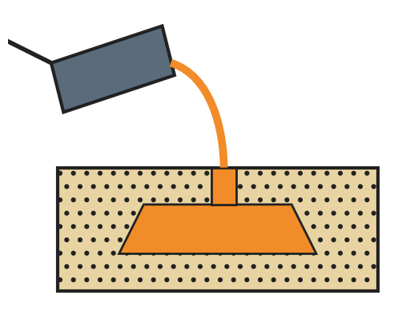
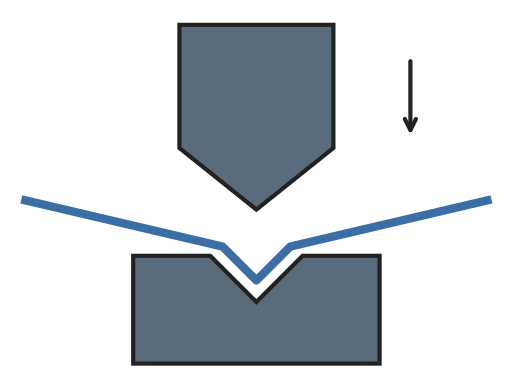
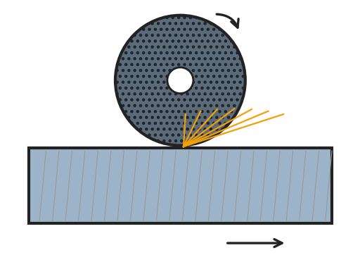
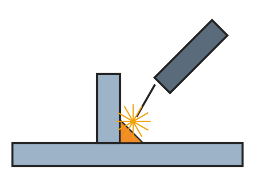
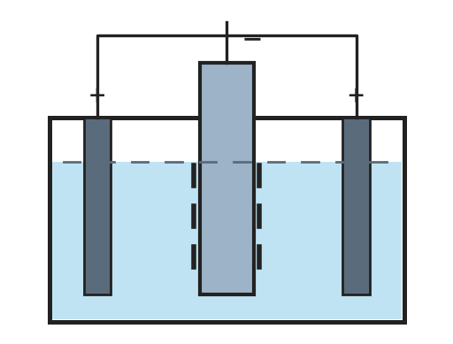
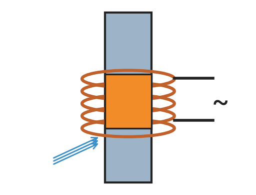
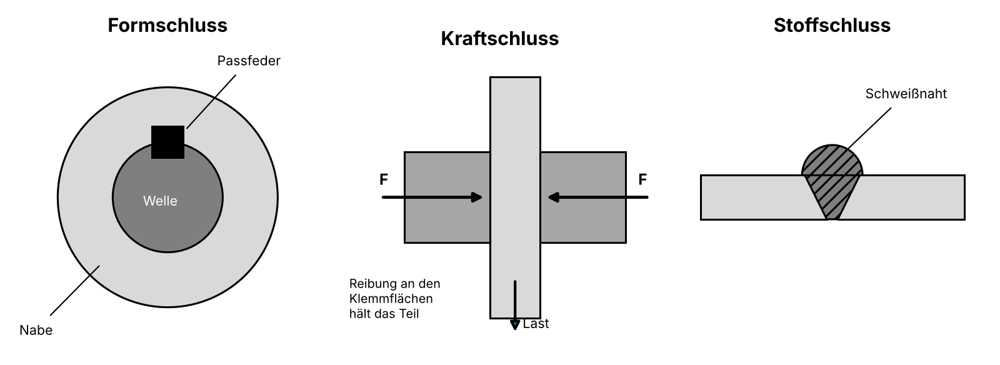

Fertigungsverfahren und Fügen
Arbeiten Sie die Module durch. Jedes Modul endet mit einem Verständnis-Check. Ein Modul ist abgeschlossen, wenn alle Fragen richtig beantwortet sind. Oben rechts können Sie zwischen Standard und Einfach wechseln.
Arbeiten Sie die Module durch. Jedes Modul endet mit einem Verständnis-Check. Ein Modul ist abgeschlossen, wenn alle Fragen richtig beantwortet sind. Oben rechts können Sie zwischen Standard und Einfach wechseln.
Jedes Bauteil einer Maschine wird mit einem oder mehreren Fertigungsverfahren hergestellt. Nach DIN 8580 gibt es sechs Hauptgruppen. Sie unterscheiden sich darin, ob die Form des Werkstücks geschaffen, geändert oder beibehalten wird. Außerdem kommt es darauf an, was mit dem Zusammenhalt des Werkstoffs passiert, also damit, wie fest die Teilchen des Werkstoffs miteinander verbunden sind.
| Hauptgruppe | Form / Zusammenhalt | Was passiert? | Verfahren (Beispiele) |
|---|---|---|---|
| 1 Urformen  | Form: geschaffen Zusammenhalt: geschaffen | Aus einem formlosen Stoff (flüssiges Metall, Kunststoff, Metallpulver) entsteht ein festes Werkstück. | Gießen, Druckgießen, Spritzgießen, Schäumen, Sintern, Aufdampfen |
| 2 Umformen  | Form: geändert Zusammenhalt: beibehalten | Ein festes Werkstück wird durch Kräfte (Zug, Druck, Schub, Biegung) bleibend verformt. Es fällt kein Werkstoff weg. | Biegen, Abkanten, Wickeln, Walzen, Schmieden, Tiefziehen, Streckrichten |
| 3 Trennen  | Form: geändert Zusammenhalt: verkleinert | Werkstoff wird abgetrennt: durch Zerteilen, Spanen, Abtragen, Zerlegen oder Reinigen. | Sägen, Bohren, Drehen, Fräsen, Schleifen, Stoßen, Räumen, Abschneiden, Erodieren, Auseinanderschrauben, Strahlen |
| 4 Fügen  | Form: geändert Zusammenhalt: vergrößert | Werkstücke werden verbunden: durch Zusammenlegen, An- und Einpressen, Umformen oder Stoffverbinden. | Verschrauben, Klemmen, Vernieten, Schweißen, Einpressen (z. B. Lager), Falzen, Löten, Kleben |
| 5 Beschichten  | Form: beibehalten Zusammenhalt: vergrößert | Eine fest haftende Schicht wird aufgebracht: aus flüssigem, pulverigem, gasförmigem oder ionisiertem Zustand. | Lackieren, Pulverbeschichten, Verchromen, Verzinken (Galvanisieren), Anstreichen, Aufdampfen |
| 6 Stoffeigenschaft ändern  | Form: beibehalten Zusammenhalt: beibehalten, verkleinert oder vergrößert | Die Eigenschaften des Werkstoffs ändern sich (z. B. Härte), indem Stoffteilchen umgelagert, ausgesondert oder eingebracht werden. | Härten, Anlassen, Vergüten, Glühen, Nitrieren, Aufkohlen |
Verbindungen an Maschinen übertragen Kräfte und Drehmomente. Nach ihrem Wirkprinzip unterscheidet man drei Grundarten:

| Wirkprinzip | So hält die Verbindung | Beispiele |
|---|---|---|
| Formschluss | Die Teile greifen durch ihre Form ineinander. Die Kraft wird über Flächen übertragen, die aneinanderliegen. | Passfeder, Keilwelle, Zahnrad und Zahnstange, Stift, Bolzen, Niet |
| Kraftschluss | Die Teile werden aufeinandergepresst. Die Kraft wird durch Reibung übertragen. | Klemmverbindung, Schraubenverbindung, Kegel-, Pressverbindung |
| Stoffschluss | Die Teile werden durch Werkstoff zusammengehalten (Kohäsion und Adhäsion). | Schweißen, Löten, Kleben |
Weitere form- und kraftschlüssige Verbindungen finden Sie im Tabellenbuch unter dem Stichwort „Welle-Nabe-Verbindungen“.
Wie stark eine kraftschlüssige Verbindung hält, hängt von der Reibung ab. Die Reibung ist abhängig von
Bei manchen Verbindungen wirken Kraftschluss und Formschluss zusammen. Zuerst werden die Teile verspannt, z. B. durch einen eingetriebenen Keil oder durch eine Mutter, die eine Nabe auf einen Kegel zieht. Das Drehmoment wird dann zunächst durch Reibung übertragen. Reicht die Reibung nicht mehr aus, legen sich Keil bzw. Feder und Nut mit ihren Flächen aneinander. Ab jetzt wird das Drehmoment formschlüssig übertragen.
Beispiele: Keilverbindung, Kegelverbindung mit Scheibenfeder.
Durch Fügen entstehen feste oder bewegliche Verbindungen.
Teile, die man verstellt und danach festklemmt (z. B. einen Anschlag), sind im Betrieb fest verbunden.
| lösbar | unlösbar | |
|---|---|---|
| fest | Gehäusedeckel mit Schrauben, Zahnrad mit Passfeder | Schweißnaht, Niet, Klebung |
| beweglich | Schieberad auf Keilwelle, Zahnrad und Zahnstange | vernietetes Gelenk (z. B. bei einer Zange) |
Die Lösbarkeit entscheidet, wie ein beschädigtes Teil getauscht wird:
Sicherheit: Vor jeder Instandsetzung die Maschine ausschalten und gegen Wiedereinschalten sichern (Hauptschalter abschließen). Wird eine Schutzeinrichtung (z. B. eine Schutzhaube) instand gesetzt, muss eine befähigte Person sie prüfen, bevor die Maschine wieder verwendet werden darf.
Selbst schweißen? Eine Schweißnaht ist wieder stoffschlüssig und unlösbar. Die Hitze beim Schweißen verbrennt Beschichtungen (z. B. Lack, Pulverbeschichtung). Die Stelle kann danach rosten. Dünne Bleche können sich verziehen oder durchbrennen.